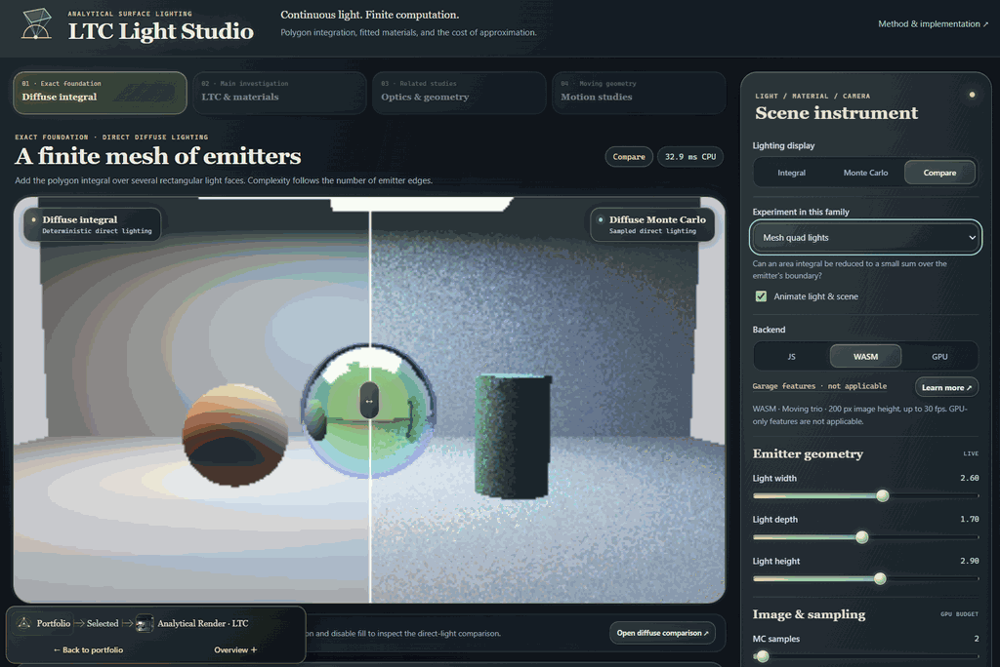
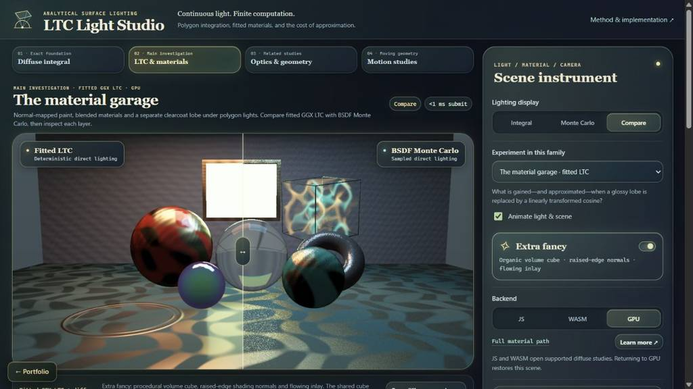

Interactive application Experimental
Interactive
Overview · selected highlights
Analytical Render · LTC
Replace many direct-light samples with a compact geometric integral. A linearly transformed cosine approximates the material lobe, turning a polygonal emitter into an integrable boundary; a material garage compares the result with Monte Carlo lighting.
FitTransformIntegrate
- f
Fit the lobe
Approximate the directional material response with a transformed cosine.
- M
Transform the light
Move the emitter vertices into the fitted distribution's coordinates.
- ∫
Integrate the edges
Accumulate oriented contributions around the transformed spherical polygon.
- Δ
Compare the image
Inspect fitted-model error beside a sampled direct-light reference.
The polygon integral is deterministic; the material-lobe fit is where the approximation enters.

